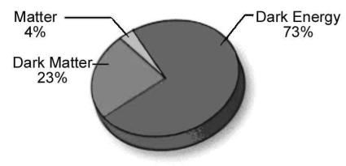

―We created not the ‗Skies and Lands and all between them‘ (this universe) merely in sport. We created them not except for just ends. But most of them do not understand. Verily, the day of sorting out is the time appointed for all of them.‖ [Al Quran 44:38-40]
"আমরা আকাশ ও ভূমি এবং তাদের মধ্যবর্তী সমস্ত কিছু" (এই মহাবিশ্ব) নিছক খেলাধুলায় সৃষ্টি করিনি। আমি তাদের সৃষ্টি করিনি কেবলমাত্র প্রান্ত ছাড়া। কিন্তু তাদের অধিকাংশই বোঝে না। প্রকৃতপক্ষে, বাছাইয়ের দিনটি তাদের সকলের জন্য নির্ধারিত সময়।'' [আল কুরআন 44:38-40]
In this term of life, humans are sent to this universe (Samawaat) to be tested and to develop. To place them in the Samawaat, Earth had to be prepared through a long process, with special protections from cosmic radiation and asteroids—Earth is a special planet. We need to understand the jinns because they are actively working against us, trying to prove that we are unfit to be the vicegerents of God—they do not want us to return to the Jannaat. In this Section, I will discuss the jinns in details. The discussion will progress in the following sequence: 1. Two-in-One Universe 2. Jinns, a perfect Universal Creature 3. The Root of Rivalry 4. The Followers of Iblis (Chief Satan) 5. Ability of Provocation 6. Why Jinns follow Iblis to Provoke Humans 7. Conclusion 8. Summary
জীবনের এই মেয়াদে, মানুষকে পরীক্ষা করা এবং বিকাশের জন্য এই মহাবিশ্বে (সামাওয়াত) পাঠানো হয়েছে। সামওয়াতে তাদের স্থাপন করার জন্য, পৃথিবীকে একটি দীর্ঘ প্রক্রিয়ার মাধ্যমে প্রস্তুত করতে হয়েছিল, মহাজাগতিক বিকিরণ এবং গ্রহাণু থেকে বিশেষ সুরক্ষা সহ - পৃথিবী একটি বিশেষ গ্রহ। আমাদের জ্বিনদের বুঝতে হবে কারণ তারা সক্রিয়ভাবে আমাদের বিরুদ্ধে কাজ করছে, প্রমাণ করার চেষ্টা করছে যে আমরা আল্লাহর ভাইসার্জর হওয়ার অযোগ্য-তারা চায় না যে আমরা জান্নাতে ফিরে যাই। এই বিভাগে, আমি জ্বিন সম্পর্কে বিস্তারিত আলোচনা করব। আলোচনাটি নিম্নলিখিত ক্রমানুসারে এগিয়ে যাবে: 1. টু-ইন-ওয়ান ইউনিভার্স 2. জ্বিন, একটি নিখুঁত বিশ্বজনীন প্রাণী 3. প্রতিদ্বন্দ্বিতার মূল 4. ইবলিসের অনুসারী (প্রধান শয়তান) 5. উস্কানি দেওয়ার ক্ষমতা 6. কেন জ্বিনরা মানুষকে উস্কে দিতে ইবলিসকে অনুসরণ করে 7. সুমম
1. Two-in-One Universe
1. টু-ইন-ওয়ান ইউনিভার্স
The jinns live around us, but we cannot see them. It is commonly said that they are created from fire. If that were the case, we would presumably be able to feel their presence. Yet, no one has been able to sense them, and no scientist has been able to detect them. As Believers, we accept the existence of jinns. For others, this idea might seem like a fairy tale, as there is no scientific evidence to support it. However, recent scientific theories about matter and anti-matter suggest the possibility of their existence. ―We now know that every particle has an anti- particle, with which it can annihilate (In case of the force carrying particles, the antiparticles are the same as the particles themselves). There could be whole anti-world and anti-people made out of anti-particles. However, if you meet your anti-self, do not shake hands! You would both vanish in a great flash of light.‖ – A Brief History of Time by Stephen Hawking. If Hawking‘s idea about anti-worlds and anti-people is scientific, then the idea of jinns is not unscientific. A universe that possesses five times more dark matter than regular matter could also possess creatures made from dark matter (with antimatter being a type of dark matter). ―However, we know that the universe must also contain what is called dark matter, which we cannot observe directly- One piece of evidence for this dark matter comes from spiral galaxies. These are enormous pancake-shaped collections of stars and gas. We observe that they are rotating about their centers, but the rate of rotation is sufficiently high that they would fly apart if they contained only the stars and gas that we observe. There must be some unseen form of matter whose gravitational attraction is great enough to hold the galaxies together as they rotate.‖ – Black Holes and Baby Universes by Stephen Hawking. ―Another piece of evidence for dark matter comes from clusters of galaxies. We observe that galaxies are not uniformly distributed throughout the space; they are gathered together in clusters that range from a few galaxies to millions. Presumably, these clusters are formed because the galaxies attract each other into groups. However, we can measure the speeds at which individual galaxies are moving in these clusters. We find they are so high that the clusters would fly apart unless they were held together by gravitational attraction. The mass required is considerably greater than the masses of all the galaxies. This is the case even if we take the galaxies to have the masses required to hold themselves together as they rotate. It follows, therefore, that there must be extra dark matter present in clusters of galaxies outside the galaxies that we see.‖ – Black Holes and Baby Universes by Stephen Hawking.
জিনরা আমাদের চারপাশে বাস করে, কিন্তু আমরা তাদের দেখতে পাই না। সাধারণত বলা হয় এগুলো আগুন থেকে সৃষ্টি হয়েছে। যদি তা হয় তবে আমরা সম্ভবত তাদের উপস্থিতি অনুভব করতে সক্ষম হব। তবুও, কেউ তাদের অনুধাবন করতে সক্ষম হয়নি, এবং কোন বিজ্ঞানী তাদের সনাক্ত করতে সক্ষম হয়নি। বিশ্বাসী হিসেবে আমরা জিনদের অস্তিত্ব স্বীকার করি। অন্যদের জন্য, এই ধারণাটি একটি রূপকথার মতো মনে হতে পারে, কারণ এটি সমর্থন করার জন্য কোন বৈজ্ঞানিক প্রমাণ নেই। যাইহোক, পদার্থ এবং অ্যান্টি-ম্যাটার সম্পর্কে সাম্প্রতিক বৈজ্ঞানিক তত্ত্বগুলি তাদের অস্তিত্বের সম্ভাবনার পরামর্শ দেয়। - আমরা এখন জানি যে প্রতিটি কণার একটি অ্যান্টি-পার্টিকেল আছে, যার সাহায্যে এটি ধ্বংস করতে পারে (কণা বহনকারী শক্তির ক্ষেত্রে, প্রতিকণাগুলি কণার মতোই)। বিরোধী কণা দিয়ে তৈরি পুরো বিশ্ববিরোধী এবং জনবিরোধী হতে পারে। তবে নিজের বিরোধীদের সাথে দেখা হলে হাত মেলাবেন না! আপনি দুজনেই আলোর এক বিশাল ঝলকানিতে অদৃশ্য হয়ে যাবেন।'' - স্টিফেন হকিংয়ের সময়ের সংক্ষিপ্ত ইতিহাস। বিশ্ব-বিদ্বেষী ও মানুষ-বিরোধী সম্পর্কে হকিংয়ের ধারণা যদি বৈজ্ঞানিক হয়, তাহলে জ্বীনদের ধারণা অবৈজ্ঞানিক নয়। একটি মহাবিশ্ব যা নিয়মিত পদার্থের চেয়ে পাঁচগুণ বেশি ডার্ক ম্যাটারের অধিকারী সেখানে ডার্ক ম্যাটার থেকে তৈরি প্রাণীও থাকতে পারে (অ্যান্টিম্যাটার এক ধরনের ডার্ক ম্যাটার)। -তবে, আমরা জানি যে মহাবিশ্বে এমন কিছু থাকতে হবে যাকে ডার্ক ম্যাটার বলা হয়, যা আমরা সরাসরি পর্যবেক্ষণ করতে পারি না- এই ডার্ক ম্যাটারের এক টুকরো প্রমাণ সর্পিল ছায়াপথ থেকে আসে। এগুলি নক্ষত্র এবং গ্যাসের বিশাল প্যানকেক-আকৃতির সংগ্রহ। আমরা লক্ষ্য করি যে তারা তাদের কেন্দ্রগুলির চারপাশে ঘুরছে, তবে ঘূর্ণনের হার যথেষ্ট বেশি যে তারা যদি আমরা পর্যবেক্ষণ করি শুধুমাত্র তারা এবং গ্যাস থাকে তবে তারা উড়ে যাবে। বস্তুর কিছু অদেখা রূপ থাকতে হবে যার মহাকর্ষীয় আকর্ষণ গ্যালাক্সিগুলিকে ঘোরানোর সময় একসাথে ধরে রাখতে যথেষ্ট।'' - স্টিফেন হকিং দ্বারা ব্ল্যাক হোলস এবং বেবি ইউনিভার্স। - ডার্ক ম্যাটারের আরেকটি প্রমাণ গ্যালাক্সির ক্লাস্টার থেকে আসে। আমরা লক্ষ্য করি যে গ্যালাক্সিগুলি মহাকাশ জুড়ে সমানভাবে বিতরণ করা হয় না; তারা কয়েকটি গ্যালাক্সি থেকে লক্ষ লক্ষ পর্যন্ত বিস্তৃত ক্লাস্টারে একত্রিত হয়। সম্ভবত, এই ক্লাস্টারগুলি গঠিত হয়েছে কারণ ছায়াপথগুলি একে অপরকে দলে আকৃষ্ট করে। যাইহোক, আমরা এই ক্লাস্টারগুলিতে পৃথক ছায়াপথগুলি যে গতিতে চলছে তা পরিমাপ করতে পারি। আমরা দেখতে পাই যে তারা এত বেশি যে ক্লাস্টারগুলি আলাদা হয়ে উড়ে যাবে যদি না তারা মহাকর্ষীয় আকর্ষণ দ্বারা একত্রিত হয়। প্রয়োজনীয় ভর সমস্ত ছায়াপথের ভরের তুলনায় যথেষ্ট বেশি। এমনকি যদি আমরা গ্যালাক্সিগুলিকে ঘোরানোর সময় নিজেদেরকে একত্রে ধরে রাখার জন্য প্রয়োজনীয় ভরগুলিকে গ্রহণ করি তাহলেও এটি হয়। সুতরাং, এটি অনুসরণ করে যে গ্যালাক্সির বাইরে গ্যালাক্সির ক্লাস্টারগুলিতে অবশ্যই অতিরিক্ত ডার্ক ম্যাটার থাকতে হবে যা আমরা দেখতে পাই।'' - স্টিফেন হকিং দ্বারা ব্ল্যাক হোলস এবং বেবি ইউনিভার্স।
FIGURE 7.1: Percentage of Matter

চিত্র 7_1 / Figure 7_1
চিত্র 7.1: পদার্থের শতাংশ
চিত্র 7_1 / Figure 7_1
The presence of dark matter is inferred from its gravitational effects, and particles it may be composed of, such as neutrinos, provide measurable evidence of its existence. It is estimated that dark matter constitutes about 23 percent of the overall mass of the universe. The Milky Way galaxy is believed to contain roughly eight times more dark matter than ordinary matter. In most regions of the universe, dark matter and visible matter coexist, proportionately balanced by mutual gravitational attraction. Antimatter is a type of dark matter. Just as electrons, protons, and neutrons form the atoms of matter, positrons (anti-electrons), anti-protons, and anti-neutrons form the anti-atoms of antimatter. Jinns are around us, but we cannot sense or interact with them. It could be possible if jinns are created from antimatter. The encounter between a subatomic particle and its corresponding antiparticle results in the annihilation of both, producing photons and neutrinos. However, such collisions are not commonly observed in space, possibly due to shielding by certain types of fields. The magnetic field of a black hole makes it difficult for matter to fall into the black hole. Similarly, some forces provide protection to subatomic particles: magnetic fields protect electrons, strong nuclear force fields protect protons, and there may be unknown force fields (yet to be discovered) that protect atoms. Moreover, even if an anti-atom passes through an atom, the chances of particles and anti-particles colliding with each other remain slim because subatomic particles and anti-particles are very small, and the space inside an atom or anti-atom is mostly empty. For example, if another star system were to pass through our solar system, it is unlikely that one planet would collide with another, as the space within the solar system is largely empty. Therefore, matter and anti-matter are effectively invisible to each other. Every moment, a huge amount of anti-matter passes through our bodies, but we do not perceive it. The Quran says that jinns are created from the poisonous fire:
ডার্ক ম্যাটারের উপস্থিতি তার মাধ্যাকর্ষণ প্রভাব থেকে অনুমান করা হয়, এবং নিউট্রিনোর মতো কণা এটির অস্তিত্বের পরিমাপযোগ্য প্রমাণ দেয়। এটি অনুমান করা হয় যে ডার্ক ম্যাটার মহাবিশ্বের সামগ্রিক ভরের প্রায় 23 শতাংশ গঠন করে। মিল্কিওয়ে গ্যালাক্সিতে সাধারণ পদার্থের চেয়ে প্রায় আট গুণ বেশি অন্ধকার পদার্থ রয়েছে বলে মনে করা হয়। মহাবিশ্বের বেশিরভাগ অঞ্চলে, অন্ধকার পদার্থ এবং দৃশ্যমান পদার্থ সহাবস্থান করে, আনুপাতিকভাবে পারস্পরিক মহাকর্ষীয় আকর্ষণ দ্বারা ভারসাম্যপূর্ণ। অ্যান্টিম্যাটার হল এক ধরনের ডার্ক ম্যাটার। ইলেক্ট্রন, প্রোটন এবং নিউট্রন যেমন পদার্থের পরমাণু গঠন করে, তেমনি পজিট্রন (অ্যান্টি-ইলেকট্রন), অ্যান্টি-প্রোটন এবং অ্যান্টি-নিউট্রন অ্যান্টিম্যাটারের অ্যান্টি-পরমাণু তৈরি করে। জ্বিনরা আমাদের চারপাশে আছে, কিন্তু আমরা তাদের সাথে বোধ বা যোগাযোগ করতে পারি না। এটা সম্ভব হতে পারে যদি প্রতিপদার্থ থেকে জিনদের সৃষ্টি করা হয়। একটি উপ-পরমাণু কণা এবং এর সংশ্লিষ্ট প্রতিকণার মধ্যে সংঘর্ষের ফলে ফোটন এবং নিউট্রিনো উৎপন্ন উভয়েরই বিনাশ ঘটে। যাইহোক, এই ধরনের সংঘর্ষগুলি সাধারণত মহাকাশে পরিলক্ষিত হয় না, সম্ভবত নির্দিষ্ট ধরণের ক্ষেত্র দ্বারা রক্ষা করার কারণে। ব্ল্যাক হোলের চৌম্বক ক্ষেত্র পদার্থের জন্য ব্ল্যাক হোলে পড়া কঠিন করে তোলে। একইভাবে, কিছু শক্তি উপ-পরমাণু কণাকে সুরক্ষা প্রদান করে: চৌম্বক ক্ষেত্রগুলি ইলেকট্রনকে রক্ষা করে, শক্তিশালী পারমাণবিক বল ক্ষেত্রগুলি প্রোটনকে রক্ষা করে, এবং অজানা বল ক্ষেত্র (এখনও আবিষ্কৃত) হতে পারে যা পরমাণুকে রক্ষা করে। তদুপরি, একটি অ্যান্টি-অ্যাটম একটি পরমাণুর মধ্য দিয়ে গেলেও, কণা এবং অ্যান্টি-কণাগুলির একে অপরের সাথে সংঘর্ষের সম্ভাবনা কম থাকে কারণ উপ-পরমাণু কণা এবং অ্যান্টি-কণাগুলি খুব ছোট এবং একটি পরমাণু বা অ্যান্টি-অ্যাটমের ভিতরের স্থান বেশিরভাগই খালি থাকে। উদাহরণস্বরূপ, যদি আমাদের সৌরজগতের মধ্য দিয়ে অন্য একটি নক্ষত্রমণ্ডল চলে যায়, তাহলে একটি গ্রহের সঙ্গে অন্য গ্রহের সংঘর্ষের সম্ভাবনা কম, কারণ সৌরজগতের মধ্যে স্থানটি অনেকাংশে ফাঁকা। অতএব, পদার্থ এবং বিরোধী পদার্থ একে অপরের কাছে কার্যকরভাবে অদৃশ্য। প্রতি মুহুর্তে, আমাদের শরীরে প্রচুর পরিমাণে অ্যান্টি-ম্যাটার চলে যায়, কিন্তু আমরা তা উপলব্ধি করি না। কোরানে বলা হয়েছে, জিনদের সৃষ্টি হয়েছে বিষাক্ত আগুন থেকে।
―And the Jinn race We had created before from the poisonous fire‖ [Al Quran 15:27]
"এবং জ্বীন জাতিকে আমরা ইতিপূর্বে বিষাক্ত আগুন থেকে সৃষ্টি করেছি" [আল কুরআন 15:27]
The Arabic word ―samumi‖ means ―poison‖ but it is normally translated as ―scorching‖. In the verse above, the 'poisonous fire' refers to 'antimatter,' which is destructive (poisonous) to ordinary matter. The collision of matter and antimatter results in the annihilation of both, producing a great flash of light. A black hole splits atoms that fall into the accretion disk through friction. According to Hawking's theory, particles gain energy from the gravitational field and join the accretion disk, while antiparticles, having opposite momentum, fall into the black hole. As a result, the black hole loses energy. Thus, a black hole acts as a gateway to antimatter. This antimatter forms an anti-galaxy beyond the black hole. The jinns are creatures of this anti-galaxy. The same gravitational force binds both the galaxy and the anti-galaxy. As a result, the visible objects of the galaxy and the invisible objects of the anti-galaxy form two different dimensions, with black holes serving as the connectors between them. Each anti-galaxy of the Universe is a home to many animals made of antimatter. The Holy Bible references an end-time event where demons will be cast into the abyss, which means a deep hole—essentially, a black hole. If a jinni is thrown into a black hole, it returns to its dimension and requires a thousand years to come back. The universe (Samawaat) is a dual universe: one part for creatures of matter (baryonic matter) and the other for creatures of antimatter. We are the highest form of matter-based creatures, while the jinn are the highest form of antimatter-based creatures. Possibly for this reason, Satan (Azazil) argued with God, claiming that since he was created from fire (poisonous fire/antimatter) and Adam from earth (baryonic matter), why should he prostrate before Adam? In other words, he implied that a creature of matter cannot interact with a creature of antimatter, so why should he accept Adam's leadership? Allah did not accept this argument, indicating that interaction between humans and jinn may one day be possible. It is likely that humans possess a dormant system within their bodies and souls (nafs) that enables interaction with jinn. This system might become active among resurrected individuals destined for hell, where the galaxies of the re-created universe will be perceived by humans as the objects of hell. If a resurrected human lacked this ability, Allah would not have advised the inhabitants of hell to call upon the jinn, as narrated in the following verse:
আরবি শব্দ "সামুমি" এর অর্থ "বিষ" তবে এটি সাধারণত "ঝলকানি" হিসাবে অনুবাদ করা হয়। উপরের আয়াতে 'বিষাক্ত আগুন' বলতে 'প্রতিপদার্থ'কে বোঝায়, যা সাধারণ বস্তুর জন্য ধ্বংসাত্মক (বিষাক্ত)। পদার্থ এবং প্রতিপদার্থের সংঘর্ষের ফলে উভয়েরই বিনাশ ঘটে, একটি দুর্দান্ত আলোর ঝলকানি তৈরি করে। একটি ব্ল্যাক হোল পরমাণুগুলিকে বিভক্ত করে যা ঘর্ষণের মাধ্যমে অ্যাক্রিশন ডিস্কে পড়ে। হকিংয়ের তত্ত্ব অনুসারে, কণাগুলি মহাকর্ষীয় ক্ষেত্র থেকে শক্তি অর্জন করে এবং অ্যাক্রিশন ডিস্কে যোগ দেয়, অন্যদিকে প্রতিকণাগুলি, বিপরীত গতিসম্পন্ন, ব্ল্যাক হোলে পড়ে। ফলে ব্ল্যাক হোল শক্তি হারায়। সুতরাং, একটি ব্ল্যাক হোল অ্যান্টিম্যাটারের প্রবেশদ্বার হিসাবে কাজ করে। এই অ্যান্টিম্যাটার ব্ল্যাক হোলের বাইরে একটি অ্যান্টি-গ্যালাক্সি গঠন করে। জিনরা এই অ্যান্টি গ্যালাক্সির প্রাণী। একই মহাকর্ষ বল গ্যালাক্সি এবং অ্যান্টি-গ্যালাক্সি উভয়কেই আবদ্ধ করে। ফলস্বরূপ, গ্যালাক্সির দৃশ্যমান বস্তু এবং অ্যান্টি-গ্যালাক্সির অদৃশ্য বস্তু দুটি ভিন্ন মাত্রা তৈরি করে, ব্ল্যাক হোল তাদের মধ্যে সংযোগকারী হিসেবে কাজ করে। মহাবিশ্বের প্রতিটি অ্যান্টি-গ্যালাক্সি অ্যান্টিম্যাটার দিয়ে তৈরি অনেক প্রাণীর আবাসস্থল। পবিত্র বাইবেল একটি শেষ সময়ের ঘটনা উল্লেখ করে যেখানে ভূতদের অতল গহ্বরে নিক্ষেপ করা হবে, যার অর্থ একটি গভীর গহ্বর - মূলত, একটি ব্ল্যাক হোল। যদি একটি জিনিকে একটি কৃষ্ণগহ্বরে নিক্ষেপ করা হয়, তবে এটি তার মাত্রায় ফিরে আসে এবং ফিরে আসতে হাজার বছর প্রয়োজন। মহাবিশ্ব (সামাওয়াত) একটি দ্বৈত মহাবিশ্ব: একটি অংশ পদার্থের প্রাণীদের জন্য (ব্যারিওনিক পদার্থ) এবং অন্যটি প্রতিপদার্থের প্রাণীদের জন্য। আমরা পদার্থ-ভিত্তিক প্রাণীর সর্বোচ্চ রূপ, অন্যদিকে জিনরা অ্যান্টিম্যাটার-ভিত্তিক প্রাণীর সর্বোচ্চ রূপ। সম্ভবত এই কারণেই, শয়তান (আজাজিল) ঈশ্বরের সাথে তর্ক করেছিল, দাবি করেছিল যে যেহেতু তাকে আগুন (বিষাক্ত আগুন/প্রতিপদার্থ) থেকে এবং আদমকে পৃথিবী (বেরিওনিক পদার্থ) থেকে সৃষ্টি করা হয়েছে, তাহলে সে কেন আদমের সামনে সেজদা করবে? অন্য কথায়, তিনি ইঙ্গিত করেছিলেন যে পদার্থের একটি প্রাণী প্রতিপদার্থের একটি প্রাণীর সাথে যোগাযোগ করতে পারে না, তাহলে সে কেন আদমের নেতৃত্ব গ্রহণ করবে? আল্লাহ এই যুক্তি গ্রহণ করেননি, ইঙ্গিত দেয় যে মানুষ এবং জ্বীনের মধ্যে মিথস্ক্রিয়া একদিন সম্ভব হতে পারে। এটি সম্ভবত মানুষের দেহ এবং আত্মার মধ্যে একটি সুপ্ত ব্যবস্থা রয়েছে যা জিনের সাথে মিথস্ক্রিয়া করতে সক্ষম করে। এই সিস্টেমটি নরকের জন্য নির্ধারিত পুনরুত্থিত ব্যক্তিদের মধ্যে সক্রিয় হতে পারে, যেখানে পুনরুত্থিত মহাবিশ্বের ছায়াপথগুলিকে মানুষ নরকের বস্তু হিসাবে বিবেচনা করবে। যদি একজন পুনরুত্থিত মানুষের এই ক্ষমতার অভাব থাকত, তাহলে আল্লাহ জাহান্নামের অধিবাসীদেরকে জিনদের ডাকার উপদেশ দিতেন না, যেমনটি নিম্নোক্ত আয়াতে বর্ণিত হয়েছে:
―One Day He will say, "Call on those whom you thought to be My partners," and they will call on them, but they will not listen to them. And We shall set a Crucible (Mawbiqan) between them, and the Sinful shall see the fire and apprehend that they have to fall therein—no means will they find to turn away from there.‖ [Al Quran 18: 52-53]
একদিন তিনি বলবেন, যাদেরকে তোমরা আমার শরীক মনে করেছিলে তাদেরকে ডাক এবং তারা তাদের ডাকবে কিন্তু তারা তাদের কথা শুনবে না। এবং আমরা তাদের মধ্যে একটি ক্রুসিবল (মাবিকান) স্থাপন করব এবং পাপীরা আগুন দেখতে পাবে এবং বুঝতে পারবে যে তাদের সেখানে পড়তে হবে - তারা সেখান থেকে সরে যাওয়ার কোন উপায় পাবে না।'' [আল কুরআন 18: 52-53]
In the above verses, the Accretion Disc is referred to as the Crucible. A rotating magnetic field, associated with a spinning black hole, creates an Accretion Disk beyond the event horizon (the event horizon is a sphere surrounding a black hole where the escape velocity equals the speed of light). The matter falling into a black hole swirls within the Crucible at tremendous speeds and is destroyed due to friction, generating intense heat. The Crucible surrounding a black hole acts as a barrier, making it difficult for the jinns to escape from their dimension through the black hole. A sinner will witness the devastating fire produced in the Crucible and will constantly be anxious that the object of his dwelling might be drawn into the intense gravitational spiral of the black hole and face the crushing Crucible. However, a time will come when he will begin to gain control, and the jinns will become his close associates.
উপরের আয়াতগুলিতে, অ্যাক্রিশন ডিস্ককে ক্রুসিবল হিসাবে উল্লেখ করা হয়েছে। একটি ঘূর্ণায়মান চৌম্বক ক্ষেত্র, একটি ঘূর্ণায়মান ব্ল্যাক হোলের সাথে যুক্ত, ঘটনা দিগন্তের বাইরে একটি অ্যাক্রিশন ডিস্ক তৈরি করে (ঘটনা দিগন্ত হল একটি ব্ল্যাক হোলের চারপাশে অবস্থিত একটি গোলক যেখানে পালানোর বেগ আলোর গতির সমান)। একটি ব্ল্যাক হোলে পড়ে যাওয়া বিষয়টি ক্রুসিবলের মধ্যে প্রচণ্ড গতিতে ঘূর্ণায়মান হয় এবং ঘর্ষণের কারণে ধ্বংস হয়ে যায়, তীব্র তাপ সৃষ্টি করে। একটি ব্ল্যাক হোলকে ঘিরে থাকা ক্রুসিবল একটি বাধা হিসাবে কাজ করে, জ্বিনদের জন্য ব্ল্যাক হোলের মাধ্যমে তাদের মাত্রা থেকে পালানো কঠিন করে তোলে। একজন পাপী ক্রুসিবলে উৎপন্ন বিধ্বংসী আগুনের সাক্ষী থাকবে এবং ক্রমাগত উদ্বিগ্ন থাকবে যে তার বাসস্থানের বস্তুটি ব্ল্যাক হোলের তীব্র মহাকর্ষীয় সর্পিল দিকে টানা হতে পারে এবং ক্রুসিবলের মুখোমুখি হতে পারে। যাইহোক, একটি সময় আসবে যখন সে নিয়ন্ত্রণ করতে শুরু করবে এবং জিনরা তার ঘনিষ্ঠ সহযোগী হয়ে যাবে।
―If then they have patience, the Fire will be a home for them! And if they beg to be received into favor, into favor will they not be received. And We have destined for them intimate companions who made alluring to them what was before them and behind them, and the sentence among the previous generations of jinns and men who have passed away is proved against them; for they are utterly lost.‖ [Al Quran 41: 24-25]
-তাহলে যদি তারা ধৈর্য ধারণ করে তবে আগুনই হবে তাদের আবাসস্থল! এবং যদি তারা অনুগ্রহে গ্রহণ করার জন্য ভিক্ষা করে, তবে অনুগ্রহে তাদের গ্রহণ করা হবে না। এবং আমি তাদের জন্য অন্তরঙ্গ সঙ্গী নির্ধারণ করেছি যারা তাদের সামনে এবং তাদের পিছনে যা ছিল তা তাদের জন্য লোভনীয় করে তুলেছিল এবং জিন ও মানবদের পূর্ববর্তী প্রজন্মের বাক্য তাদের বিরুদ্ধে প্রমাণিত হয়েছে; কারণ তারা একেবারেই হারিয়ে গেছে।'' [আল কুরআন 41:24-25]
The nafs of a human is a combination of unknown force fields. Some of these force fields may also act on anti-matter, much like gravitational force acts on both matter and anti-matter. A resurrected hell-dweller will be able to interact with a jinni through his nafs (soul), enhanced during its stay in Sijjin. His nafs will also possess a third eye to watch the anti-creatures. 2. Jinns, a perfect Universal Creature
মানুষের নফস হল অজানা বল ক্ষেত্রগুলির সংমিশ্রণ। এই বল ক্ষেত্রগুলির মধ্যে কিছু অ্যান্টি-ম্যাটারেও কাজ করতে পারে, যেমন মহাকর্ষীয় বল পদার্থ এবং অ্যান্টি-ম্যাটার উভয়ের উপর কাজ করে। একজন পুনরুত্থিত নরকবাসী তার নফস (আত্মার) মাধ্যমে জিন্নির সাথে যোগাযোগ করতে সক্ষম হবে, সিজ্জিনে থাকার সময় উন্নত হবে। তার নফস বিরোধী প্রাণী দেখার জন্য তৃতীয় চোখের অধিকারী হবে। 2. জিন, একটি নিখুঁত বিশ্বজনীন প্রাণী
Allah initially settled Adam and Eve in the Jannaat, indicating that He created them to be suitable for that realm. Humans do not appear to be a creature designed for this fiery universe (Samawaat). It is evident that Earth has been made suitable for a creature like us through a long process of evolution. Earth is a unique planet, with its vast oceans of water, layered atmosphere, powerful magnetic shield, and countless living creatures. On the contrary, jinns appear to be creatures of this universe. In the Book of Enoch, jinns are referred to as the "Sons of the Sky." In both the Quran and the Holy Bible, the term "sky/skies" refers to this universe (Samawaat). Therefore, jinns are the sons of this universe, and this universe is their original home. Allah is the supremely intelligent Creator. If He created the jinns for this universe, they must be exceptionally well-suited to it. Their longevity, food sources, and mobility all indicate that they are highly adapted to this environment. This is discussed as follows:
আল্লাহ প্রাথমিকভাবে আদম এবং হাওয়াকে জান্নাতে বসিয়েছিলেন, ইঙ্গিত করে যে তিনি তাদেরকে সেই রাজ্যের জন্য উপযুক্ত করার জন্য সৃষ্টি করেছেন। মানুষ এই জ্বলন্ত মহাবিশ্বের (সামাওয়াত) জন্য ডিজাইন করা প্রাণী বলে মনে হয় না। এটা স্পষ্ট যে বিবর্তনের দীর্ঘ প্রক্রিয়ার মাধ্যমে পৃথিবীকে আমাদের মতো প্রাণীর জন্য উপযুক্ত করা হয়েছে। পৃথিবী একটি অনন্য গ্রহ, এর বিশাল সমুদ্রের জল, স্তরযুক্ত বায়ুমণ্ডল, শক্তিশালী চৌম্বকীয় ঢাল এবং অসংখ্য জীবন্ত প্রাণী রয়েছে। বিপরীতে, জ্বিনরা এই মহাবিশ্বের প্রাণী বলে মনে হয়। ইনোকের বইতে, জিনদের "আকাশের পুত্র" হিসাবে উল্লেখ করা হয়েছে। কুরআন এবং পবিত্র বাইবেল উভয়েই, "আকাশ/আকাশ" শব্দটি এই মহাবিশ্বকে (সামাওয়াত) বোঝায়। অতএব, জিনরা এই মহাবিশ্বের সন্তান এবং এই মহাবিশ্ব তাদের আদি বাসস্থান। আল্লাহ পরম বুদ্ধিমান সৃষ্টিকর্তা। তিনি যদি এই মহাবিশ্বের জন্য জিনদের সৃষ্টি করেন, তবে তারা অবশ্যই এর জন্য ব্যতিক্রমীভাবে উপযুক্ত হবে। তাদের দীর্ঘায়ু, খাদ্য উত্স এবং গতিশীলতা সবই ইঙ্গিত করে যে তারা এই পরিবেশের সাথে অত্যন্ত অভিযোজিত। এটি নিম্নরূপ আলোচনা করা হয়:
2a. Long Life
2ক. দীর্ঘ জীবন
A jinni can live for thousands of years, and a jinni who is a hundred years old may still be considered a child. This extended lifespan suggests that they are created to be well-suited for the nature of the anti-universe. 2b. Food
একটি জিনি হাজার বছর বাঁচতে পারে, এবং যে জিনি একশ বছর বয়সী তাকে এখনও শিশু হিসাবে বিবেচনা করা যেতে পারে। এই বর্ধিত জীবনকাল পরামর্শ দেয় যে তারা মহাবিশ্ববিরোধী প্রকৃতির জন্য উপযুক্ত হতে তৈরি করা হয়েছে। 2 খ. খাদ্য
It appears that jinns are not concerned about their food supply. They might have the ability to absorb energy (or anti-energy) directly from their environment, similar to how trees absorb energy from the Sun. Additionally, they may have access to various types of food that are crude in nature but plentiful. Consequently, they are not preoccupied with food and can persistently follow humans to lead them into evil deeds. On one occasion, Prophet Muhammad (pbuh) was pleased with several jinns (the good ones), and he prayed for their provision. As a result, they were granted two additional kinds of food: bones and hairs, which would produce sustenance once they picked them up. However, bones and hairs are not their staple foods; they already had a regular source of energy. 2c. Mobility
দেখা যাচ্ছে যে জিনরা তাদের খাদ্য সরবরাহ নিয়ে চিন্তিত নয়। তাদের পরিবেশ থেকে সরাসরি শক্তি (বা শক্তি-বিরোধী) শোষণ করার ক্ষমতা থাকতে পারে, যেমন গাছগুলি সূর্য থেকে শক্তি শোষণ করে। উপরন্তু, তাদের বিভিন্ন ধরণের খাবারের অ্যাক্সেস থাকতে পারে যা প্রকৃতিতে অপরিশোধিত তবে প্রচুর। ফলস্বরূপ, তারা খাবার নিয়ে ব্যস্ত থাকে না এবং অবিরতভাবে মানুষকে অনুসরণ করতে পারে যাতে তারা তাদের খারাপ কাজের দিকে নিয়ে যায়। একবার, নবী মুহাম্মদ (সাঃ) বেশ কিছু জিন (ভালো মানুষ) প্রতি সন্তুষ্ট হয়েছিলেন এবং তিনি তাদের রিজিকের জন্য প্রার্থনা করেছিলেন। ফলস্বরূপ, তাদের দুটি অতিরিক্ত ধরণের খাবার দেওয়া হয়েছিল: হাড় এবং চুল, যা তারা তুলে নিলে জীবিকা নির্বাহ করবে। যাইহোক, হাড় এবং চুল তাদের প্রধান খাদ্য নয়; তাদের ইতিমধ্যেই নিয়মিত শক্তির উৎস ছিল। 2 গ. গতিশীলতা
They are capable of moving from planet to planet, star to star, and galaxy to galaxy without the need for a spaceship. Moreover, there are angels assigned to guard their access to vital objects within the Skies (Samawaat / this universe).
তারা স্পেসশিপের প্রয়োজন ছাড়াই গ্রহ থেকে গ্রহে, তারা থেকে নক্ষত্র এবং গ্যালাক্সি থেকে গ্যালাক্সিতে যেতে সক্ষম। তদুপরি, আকাশের (সামাওয়াত/এই মহাবিশ্ব) মধ্যে অত্যাবশ্যক বস্তুগুলিতে তাদের অ্যাক্সেস রক্ষা করার জন্য ফেরেশতা নিযুক্ত রয়েছে।
―It is We who have set out Fortresses in the skies and made them fair-seeming to beholders. And We have guarded them from every satan (jinn) accursed. But any that gains a hearing by stealth is pursued by a flaming fire, bright‖ [Al Quran 15:16-18] The satanic jinns sometimes position themselves in certain places in the sky to steal information. They attempt to gather information from the Fortresses (astral objects where angels are accommodated). I have discussed the Fortresses in Section-9 of Chapter-6. Angels are sent in groups to monitor the affairs of living creatures. Each group covers a specific period of time (one thousand years or one thousand months). Therefore, it is possible to know the future by hearing them or by observing their forms, as angels have different shapes depending on the nature of their tasks. If a jinni gains knowledge of the future from a Fortress, he may relay it to some foretellers or to the enemies of Truth. The jinni whispers this information into a human‘s ear.
- আমরাই আকাশে দুর্গ স্থাপন করেছি এবং সেগুলোকে দর্শকদের কাছে সুন্দর করে তুলেছি। আর আমি তাদেরকে প্রত্যেক অভিশপ্ত শয়তান (জিন) থেকে রক্ষা করেছি। কিন্তু যে কেউ চুপিসারে শ্রবণশক্তি অর্জন করে তাকে একটি জ্বলন্ত অগ্নি দ্বারা তাড়া করা হয়, উজ্জ্বল” [আল কুরআন 15:16-18] শয়তানী জিনরা কখনও কখনও তথ্য চুরি করার জন্য আকাশের নির্দিষ্ট জায়গায় নিজেদের অবস্থান করে। তারা দুর্গ থেকে তথ্য সংগ্রহ করার চেষ্টা করে (অ্যাস্ট্রাল বস্তু যেখানে দেবদূতদের থাকার ব্যবস্থা করা হয়)। আমি অধ্যায়-6-এর ধারা-9-এ দুর্গ সম্পর্কে আলোচনা করেছি। জীবিত প্রাণীদের বিষয়গুলি পর্যবেক্ষণ করার জন্য ফেরেশতাদের দলে পাঠানো হয়। প্রতিটি গ্রুপ নির্দিষ্ট সময়ের (এক হাজার বছর বা এক হাজার মাস) কভার করে। সুতরাং, তাদের কথা শুনে বা তাদের রূপ পর্যবেক্ষণ করে ভবিষ্যত জানা সম্ভব, কারণ ফেরেশতাদের তাদের কাজের প্রকৃতির উপর নির্ভর করে বিভিন্ন আকার রয়েছে। যদি কোন জিনি একটি দুর্গ থেকে ভবিষ্যৎ সম্পর্কে জ্ঞান লাভ করে, তবে সে তা কিছু ভবিষ্যদ্বাণী বা সত্যের শত্রুদের কাছে রিলে করতে পারে। জিনি এই তথ্যটি মানুষের কানে ফিসফিস করে।
―Then began Satan to whisper suggestions to them, bringing openly before their minds all their shame that was hidden from them. He said, "Your Lord only forbade you this tree lest you should become angels or such beings as live forever" [Al Quran 7:20]
-অতঃপর শয়তান তাদের কাছে ফিসফিস করতে শুরু করল, তাদের মনের সামনে তাদের সমস্ত লজ্জা প্রকাশ করে যা তাদের কাছ থেকে গোপন ছিল। তিনি বললেন, "তোমার প্রতিপালক শুধু তোমাকে এই গাছটি নিষেধ করেছেন যাতে তুমি ফেরেশতা না হয়ে যাও অথবা চিরকাল বেঁচে থাকা প্রাণী হয়ে যাও" [আল কুরআন 7:20]
―But Satan whispered evil to him: he said, "O Adam! Shall I lead thee to the Tree of Eternity and to a kingdom?‖ [Al Quran 20:120]
"কিন্তু শয়তান তাকে কুমন্ত্রণা দিল: সে বলল, "হে আদম, আমি কি তোমাকে অনন্তকালের বৃক্ষ এবং রাজ্যের দিকে নিয়ে যাব?" [আল কুরআন 20:120]
Generally, satanic jinns instigate humans to commit sinful deeds. However, if a person engages in a great evil act, such as striving against the religion of God or promoting a creed and culture of sin, these jinns assist him greatly by providing stolen information. The person, however, does not realize this; he believes that he is an intelligent man who has predicted it. Sometimes, foresight of the near future, aided by jinns, helps him formulate his strategy. The satans also work to unite evil people.
সাধারণত, শয়তান জ্বীনরা মানুষকে পাপ কাজ করতে প্ররোচিত করে। যাইহোক, যদি কোন ব্যক্তি একটি মহান খারাপ কাজে লিপ্ত হয়, যেমন ঈশ্বরের ধর্মের বিরুদ্ধে সংগ্রাম করা বা পাপের ধর্ম এবং সংস্কৃতি প্রচার করা, এই জিনরা তাকে চুরি করা তথ্য সরবরাহ করে ব্যাপকভাবে সহায়তা করে। ব্যক্তি অবশ্য এটা বুঝতে পারে না; তিনি বিশ্বাস করেন যে তিনি একজন বুদ্ধিমান ব্যক্তি যিনি এটি ভবিষ্যদ্বাণী করেছেন। কখনও কখনও, অদূর ভবিষ্যতের দূরদর্শিতা, জ্বিনদের দ্বারা সাহায্য করে, তাকে তার কৌশল তৈরি করতে সাহায্য করে। শয়তানরাও মন্দ লোকদের একত্রিত করার জন্য কাজ করে।
―…We made the satans friends to those without faith‖ [Al Quran 7:27]
"...আমি শয়তানকে তাদের বন্ধু বানিয়েছিলাম যারা বিশ্বাসহীন" [আল কুরআন 7:27]
For example, when Prophet Muhammad (pbuh) was hiding in a cave while being pursued by enemies, the pursuers approached the cave but did not enter, believing no one was inside. Now, if a satanic jinni had learned from the local Fortress that the Prophet (pbuh) was hiding in the cave, it could have whispered this information into the minds of the pursuers, prompting them to search the cave. Therefore, when the Prophet (pbuh) was born, the Command Station and Fortresses of the local sky were specially guarded.
উদাহরণস্বরূপ, শত্রুদের দ্বারা তাড়া করার সময় নবী মুহাম্মদ (সাঃ) যখন একটি গুহায় লুকিয়ে ছিলেন, তখন অনুগামীরা গুহার কাছে গিয়েছিলেন কিন্তু প্রবেশ করেননি, বিশ্বাস করেন যে কেউ ভিতরে ছিল না। এখন, যদি কোন শয়তানী জিনি স্থানীয় দুর্গ থেকে জানতে পারত যে, নবী (সাঃ) গুহায় লুকিয়ে আছেন, তাহলে তা অনুসারীদের মনে এই তথ্যটি ফিসফিস করে গুহা অনুসন্ধান করতে প্ররোচিত করতে পারত। অতএব, যখন নবী (সাঃ) জন্মগ্রহণ করেন, তখন স্থানীয় আকাশের কমান্ড স্টেশন এবং দুর্গগুলি বিশেষভাবে পাহারা দেওয়া হয়।
―And we (jinns) reached the Sky, so we found it strongly guarded and filled with asteroids.‖ [Al Quran 72:2]
"এবং আমরা (জিনরা) আকাশে পৌঁছেছি, তাই আমরা এটিকে শক্তভাবে সুরক্ষিত এবং গ্রহাণু দ্বারা পরিপূর্ণ পেয়েছি।" [আল কুরআন 72:2]
However, the jinns are intelligent creatures. Observing the increased guarding, some of them understood that a Prophet would soon arrive or that a great disaster of punishment was imminent.
তবে জিনরা বুদ্ধিমান প্রাণী। বর্ধিত পাহারা দেখে, তাদের মধ্যে কেউ কেউ বুঝতে পেরেছিল যে শীঘ্রই একজন নবীর আগমন ঘটবে বা শাস্তির একটি বড় বিপর্যয় আসন্ন।